Questionário
Técnica de elicitação de requisitos na qual, focada em lídar com um grande número de pessoas, pelo qual seguimento diversas heurísticas recomendadas, elabora-se um grupo de perguntas que são respondidadas pelo público. Com as respostas, diversos insumos váliosos para a elicitação de requisitos podem ser levatandos, caso as perguntas tenham sido elaboradas corretamente.
Metodologia
O questionário aqui utilizado procurou primeiro traçar o perfil de quem estava respondendo, e após isso separar o público em quem já usou e quem nunca usou o Rocket.chat. Para quem já haviam utilizado, foram feitas perguntas que procuravam análisar o nível de satisfação do usuário com ele, quais foram os principais diferenciais e pontos negativos, se o usuário ainda usa, em qual dispositivo e pra qual finalidade, e quais os principais concorrentes favorecidos. Já para quem nunca havia usado, as perguntas foram feitas de modo a concluír quais outros aplicativos de comunicação o usuário utiliza, tanto para fins pessoais quanto para fins acadêmicos, e quais são seus principais diferencias, pontos negativos, e funcionalidades que poderiam ter, bem como qual é o nível de satisfação no uso deles e em qual positivo é utilizado. No total, foram computadas 37 respostas.
Resultados
1. Perfil do público
Perguntas relacionadas a análisar o perfil das pessoas que responderam o questionário e dividi-las entre usuários e não-usuários do Rocket.chat
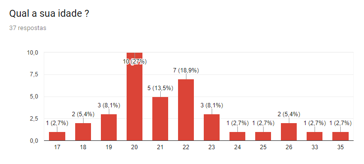 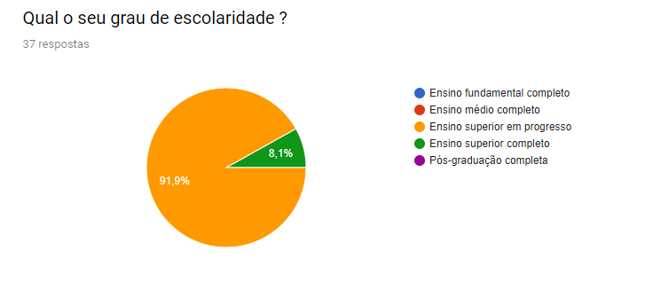 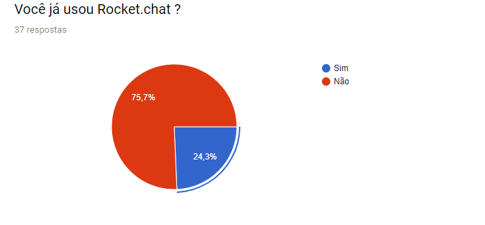
2. Pessoas que nunca usaram a aplicação
Perguntas feitas ao público que nunca usou o Rocket.Chat
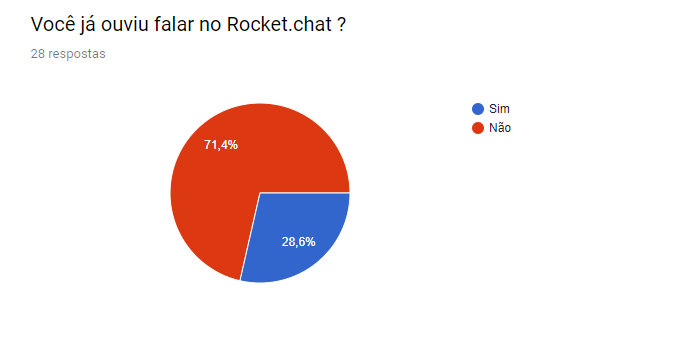 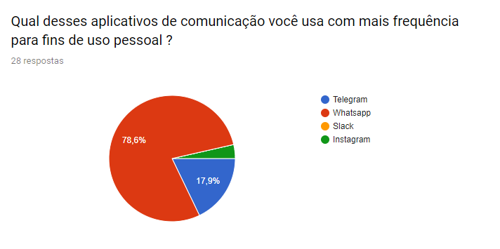 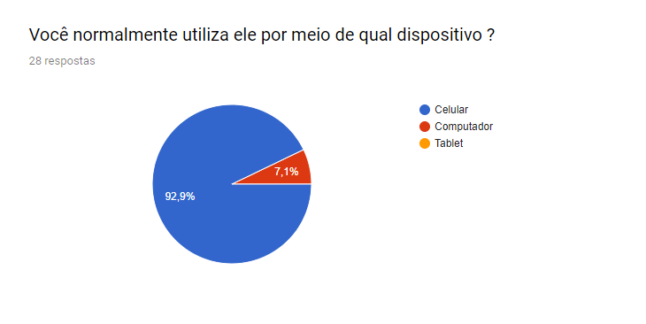 Fomentando os requisitos: Q1 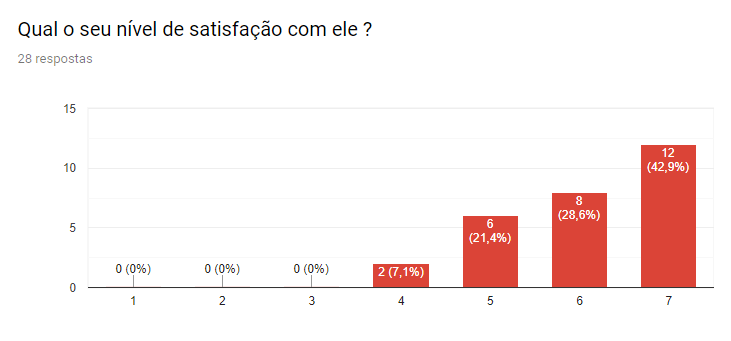
| Princpais pontos positivos levantados | Quantidade de usuários que apontaram |
|---|---|
| Popularidade | 26 |
| Os bots adicionam muitas outras possibilidades de funcionalidade | 24 |
| Possibilidade de enviar documentos, fotos, vídeos, aúdios | 12 |
| Possibilidade de apagar mensagens | 6 |
| Possibilidade de realizar backup de mensagens | 2 |
| Práticidade de uso da interface | 20 |
| Fomentando os requisitos: Q2 , Q5, Q6, Q7, Q8 |
| Principais pontos negativos levantados | Quantidade de usuários que apontaram |
|---|---|
| Pouca customização visual | 13 |
| Chamada em grupo ruim | 8 |
| Chamada de voz ruim | 12 |
| Consome muito espaço | 4 |
| Versão Desktop ligada a versão mobile | 18 |
| Grupos pouco organizados | 6 |
| Fomentando os requisitos: Q3 , Q4, Q10, Q13, Q16, Q17 |
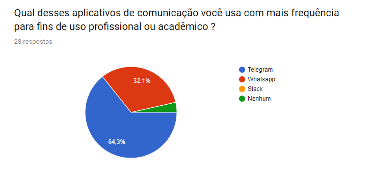 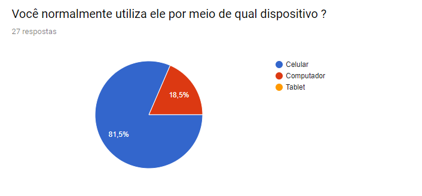 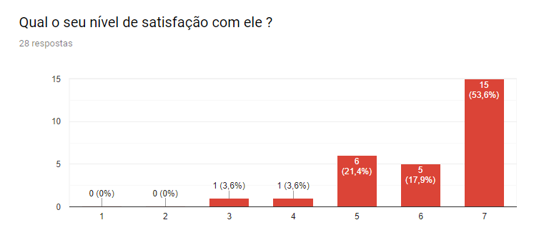
| Principais pontos positivos levantados | Quantidade de usuários que apontaram |
|---|---|
| Boas funcionalidades para conversas em grupo, como separação em channels | 18 |
| Muitas possibilidades de personalização | 10 |
| Não falha em notificar o usuário das mensagens que chegam | 14 |
| Integração com bots adiciona muitas funcionalidades | 25 |
| Fomentando os requisitos: Q16 , Q3, Q9, Q2 |
| Principais pontos negativos levantados | Quantidade de usuários que apontaram |
|---|---|
| Falta de populariade entre usuários causais | 14 |
| Interface pouco intuitiva | 17 |
| Fomentando os requisitos: Q5 |
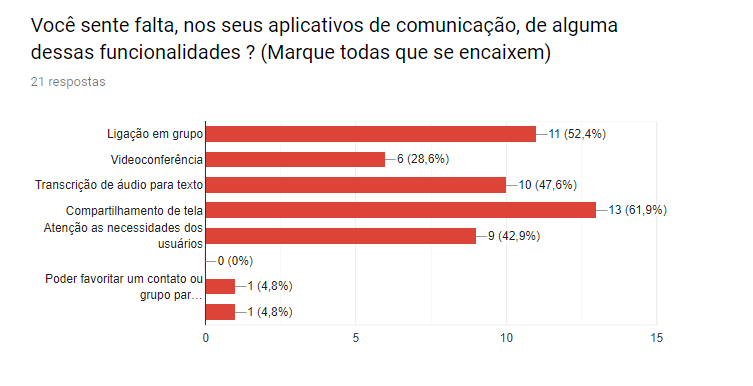 Fomentando os requisitos: Q12, Q13, Q14, Q11, Q19
3. Pessoas que já utilizaram ou utilizam a aplicação
Perguntas feitas ao público que se classifica como usuário ou ex-usuário do Rocket.chat
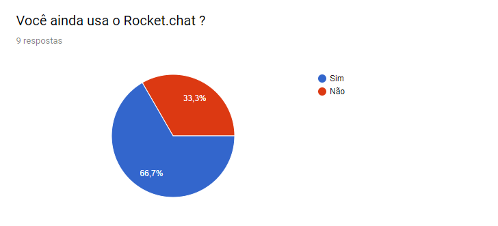 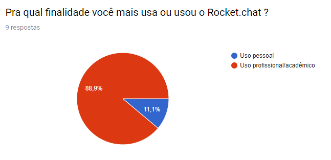 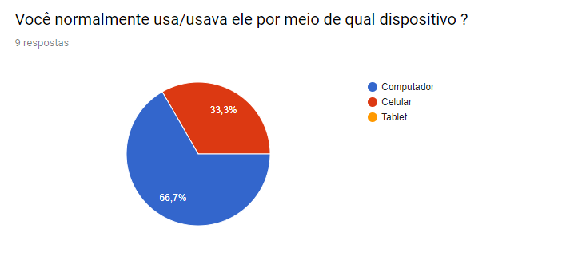 Fomentando os requisitos: Q18

| Principais diferenciais do Rocket.chat | Quantidade de usuários que apontaram |
|---|---|
| Software Livre | 6 |
| Poder subir sua própria instância | 4 |
| Open Source | 6 |
| Possibilidade de separar os grupos em channels | 9 |
| Funcionalidade de vídeoconferência | 5 |
| Compartilhamento de tela | 7 |
| Integração com bots | 9 |
| Fomentando os requisitos: Q19 , Q16, Q12, Q11, Q2, Q21 |
| Principais pontos negativos do Rocket.chat | Quantidade de usuários que apontaram |
|---|---|
| Interface pouco intuitiva | 8 |
| Falta de notificações para quando o usuário não é mencionado | 5 |
| Muitas funcionalidades são pagas | 4 |
| Fomentando os requisitos: Q9 , Q3, Q20 |
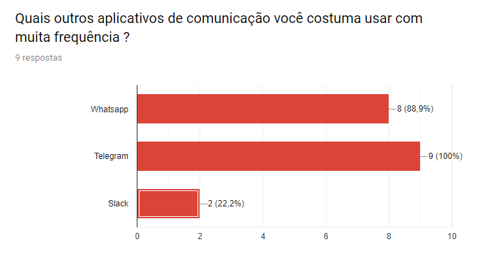 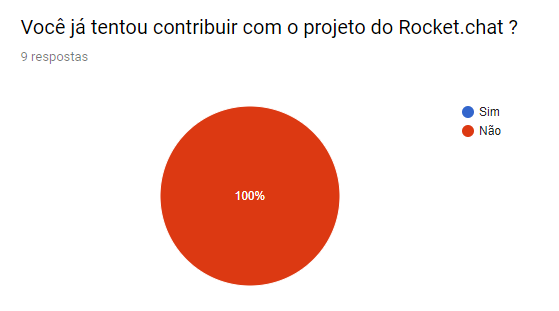
Conclusão
É possível análisar pelo questionário que a maior parte das pessoas não é usuária do Rocket.chat, porém, embora parcialmente satisfeitas com os aplicativos que usam, gostariam de ter neles algumas funcionalidades que o Rocket.chat possuí. Já as pessoas que se classificam como usuários da aplicação, gostam muito de alguns diferenciais, mas sentem falta de algumas outras coisas. O questionário poderia ter cido ainda mais conclusivo se fosse respondido por um número maior de pessoas.
Requisitos Elicitados
Abaixo podem ser vistos de forma tabular os requisitos elicitados com base nos resultados das perguntas feitas e às estatísticas deles gerados . Foi utilizada a técnica MoSCoW de priorização, pela qual os requisitos recebem atribuições de prioridade que variam de Must, a mais alta, até Would, a mais baixa, passandor por Should e Could, que nessa ordem representam prioriádes intermediárias. Para estabelecer as prioridades, foi levado em consideração o número de pessoas que levantou cada ponto, e também dando pesos diferentes pra pontos que priorizam uso pessoal e uso profissional/acadêmico, já que o aplicativo é mais voltado para o segundo caso.
| Código | Descrição | Prioridade |
|---|---|---|
| Q1 | Bom suporte para dispositivo mobile | Must |
| Q2 | Integração com Bots | Must |
| Q3 | Customização visual | Could |
| Q4 | Chamada de voz e vídeo | Must |
| Q5 | Interface de fácil uso | Should |
| Q6 | Possibilidade de enviar documentos, fotos, vídeos, aúdios | Should |
| Q7 | Backup de mensagens | Would |
| Q8 | Possibilidade de apagar as mensagens | Would |
| Q9 | Notificações consistentes | Should |
| Q10 | Não ocupar tanto espaço de armazenamento | Would |
| Q11 | Compartilhamento de tela | Should |
| Q12 | Vídeoconferência | Could |
| Q13 | Chamada de voz em grupo | Should |
| Q14 | Transcrição de áudio para texto | Could |
| Q15 | Poder favoritar um contato ou grupo | Wold |
| Q16 | Possibilidade de separar os grupos em channels | Must |
| Q17 | Possibilitar acesso a versão desktop sem precisar do celular | Could |
| Q18 | Bom suporte para dispositivo Desktop | Must |
| Q19 | Poder subir sua própria instância | Could |
| Q20 | Maior quantidade de funcionalidades gratuítas | Would |
| Q21 | Ser Open Source | Could |
Por fim, também de forma tabular, seguem os requisitos anteriormente listados, agora priorizados pelo método Fisrt Things First !
| Funcionalidades (FTF) | Benefício Relativo | Penalidade Relativa | Valor Total | Valor % | Custo Relativo | Custo % | Risco Relativo | Risco % | Prioridade |
| Q1 | 8 | 9 | 25 | 6,702412869 | 6 | 6,382978723 | 6 | 6,896551724 | 0,6817454284 |
| Q2 | 8 | 9 | 25 | 6,702412869 | 6 | 6,382978723 | 6 | 6,896551724 | 0,6817454284 |
| Q3 | 6 | 7 | 19 | 5,09383378 | 4 | 4,255319149 | 3 | 3,448275862 | 0,8518890113 |
| Q4 | 6 | 7 | 19 | 5,09383378 | 5 | 5,319148936 | 5 | 5,747126437 | 0,6217518307 |
| Q5 | 7 | 9 | 23 | 6,166219839 | 4 | 4,255319149 | 4 | 4,597701149 | 0,9408086911 |
| Q6 | 8 | 9 | 25 | 6,702412869 | 5 | 5,319148936 | 4 | 4,597701149 | 0,8798127197 |
| Q7 | 4 | 3 | 11 | 2,949061662 | 3 | 3,191489362 | 3 | 3,448275862 | 0,599935977 |
| Q8 | 4 | 3 | 11 | 2,949061662 | 2 | 2,127659574 | 2 | 2,298850575 | 0,8999039654 |
| Q9 | 5 | 5 | 15 | 4,021447721 | 5 | 5,319148936 | 2 | 2,298850575 | 0,621689971 |
| Q10 | 4 | 6 | 14 | 3,753351206 | 5 | 5,319148936 | 4 | 4,597701149 | 0,4926951231 |
| Q11 | 6 | 7 | 19 | 5,09383378 | 4 | 4,255319149 | 5 | 5,747126437 | 0,7145346939 |
| Q12 | 7 | 8 | 22 | 5,898123324 | 5 | 5,319148936 | 5 | 5,747126437 | 0,7199231723 |
| Q13 | 7 | 8 | 22 | 5,898123324 | 5 | 5,319148936 | 6 | 6,896551724 | 0,6727315557 |
| Q14 | 5 | 4 | 14 | 3,753351206 | 4 | 4,255319149 | 8 | 9,195402299 | 0,4239627924 |
| Q15 | 4 | 3 | 11 | 2,949061662 | 2 | 2,127659574 | 4 | 4,597701149 | 0,6662272451 |
| Q16 | 7 | 9 | 23 | 6,166219839 | 4 | 4,255319149 | 4 | 4,597701149 | 0,9408086911 |
| Q17 | 5 | 5 | 15 | 4,021447721 | 5 | 5,319148936 | 3 | 3,448275862 | 0,5709617962 |
| Q18 | 6 | 7 | 19 | 5,09383378 | 5 | 5,319148936 | 4 | 4,597701149 | 0,668657667 |
| Q19 | 5 | 6 | 16 | 4,289544236 | 6 | 6,382978723 | 5 | 5,747126437 | 0,4634067736 |
| Q20 | 4 | 3 | 11 | 2,949061662 | 6 | 6,382978723 | 2 | 2,298850575 | 0,3915166603 |
| Q21 | 6 | 2 | 14 | 3,753351206 | 3 | 3,191489362 | 2 | 2,298850575 | 0,8646452441 |
| TOTAL | 122 | 129 | 373 | 100 | 94 | 100 | 87 | 100 |
Versionamento
| Data | Versão | Modificação | Autor |
|---|---|---|---|
| 06/04/2019 | 1.0 | Adição da análise do questionário | Marcos Nery |
| 06/04/2019 | 1.1 | Adição da priorização por MoSCoW | Marcos Nery |
| 09/04/2019 | 1.2 | Adição da priorização por FTF | Marcos Nery |